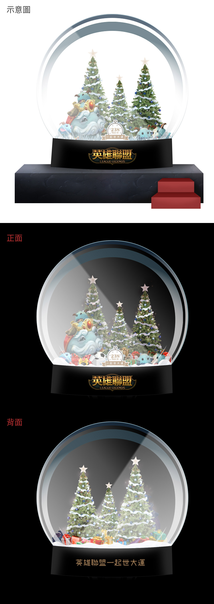
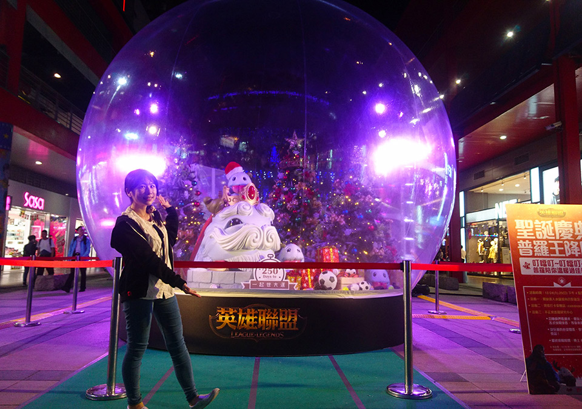

英雄聯盟 普羅聖誕慶典水晶球概念圖
負責項目
- 實體化製作物之概念圖設計
作品介紹
當初接到這個需求時，只有「水晶球裡放普羅，有聖誕節的感覺，要搭配世大運」等訊息，便著手進行設計稿。
過程中難免擔憂「我這樣設計會不會空泛？球裡的東西夠豐富嗎？有沒有合乎主題呢？」中間來回需求變更、 場地考量也修改了3~4個版本，終於看到實體化的成品。
雖然只參與一部份，心中仍滿是欣慰。
水晶球於2016年的聖誕節期間，展於信義威秀前。

